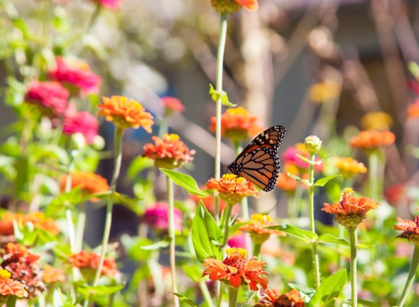

Zima
Jedna z czterech pór roku w przyrodzie, w strefie klimatu umiarkowanego. Charakteryzuje się najniższymi temperaturami powietrza w skali roku, umiarkowaną ilością opadu atmosferycznego, zazwyczaj zestaloną (zamarzniętą) formą opadu i osadu atmosferycznego, a większość świata roślin i zwierząt przechodzi okres uśpienia.
Zima astronomiczna rozpoczyna się w momencie przesilenia zimowego i trwa do momentu równonocy wiosennej, co w przybliżeniu oznacza na półkuli północnej okres pomiędzy 22 grudnia a 21 marca.
Podczas zimy astronomicznej dzienna pora dnia jest krótsza od pory nocnej, jednak z każdą kolejną dobą dnia przybywa, a nocy ubywa.

Wiosna
Astronomiczna rozpoczyna się w momencie równonocy wiosennej i trwa do momentu przesilenia letniego, co w przybliżeniu oznacza na półkuli północnej okres pomiędzy 21 marca a 22 czerwca (czasami daty te wypadają dzień wcześniej lub dzień później, a w roku przestępnym mogą być dodatkowo cofnięte o jeden dzień). Podczas wiosny astronomicznej dzienna pora dnia jest dłuższa od pory nocnej, a ponadto z każdą kolejną dobą dzień jest dłuższy, noc krótsza, aż do przesilenia letniego, od tego dnia dni stają się krótsze, a noce dłuższe. Temperatura powietrza wiosną rzadko spada poniżej 0 °C.Za wiosnę klimatyczną przyjmuje się okres roku, w którym średnie dobowe temperatury powietrza wahają się pomiędzy 5 a 15°C. Zasadniczo wiosnę poprzedza zima, jednak pomiędzy tymi okresami znajduje się klimatyczny etap przejściowy − przedwiośnie. Za początek wiosny fenologicznej przyjmuje się początek wegetacji oraz kwitnienie przebiśniegów i krokusów

Lato
Jedna z czterech podstawowych pór roku w przyrodzie, w strefie klimatu umiarkowanego. Charakteryzuje się najwyższymi temperaturami powietrza w skali roku. W świecie roślin jest to okres dojrzewania nasion i owoców, a w świecie zwierząt jest to okres wydawania na świat nowego pokolenia i przygotowania go do samodzielnego życia.Lato astronomiczne rozpoczyna się w momencie przesilenia letniego i trwa do momentu równonocy jesiennej, co w przybliżeniu oznacza na półkuli północnej okres pomiędzy 21 czerwca a 23 września (czasami daty te wypadają dzień wcześniej lub dzień później, a w roku przestępnym mogą być dodatkowo cofnięte o jeden dzień). Podczas lata astronomicznego dzienna pora dnia jest dłuższa od pory nocnej, jednak z każdą kolejną dobą dnia ubywa, a nocy przybywa – Słońce wschodzi coraz później i góruje na coraz mniejszych wysokościach ponad horyzontem.